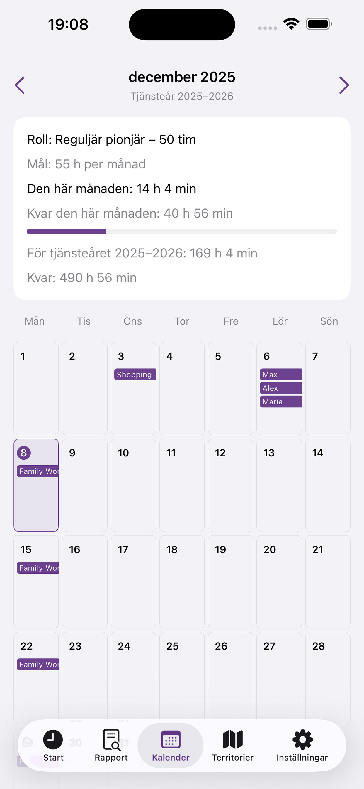
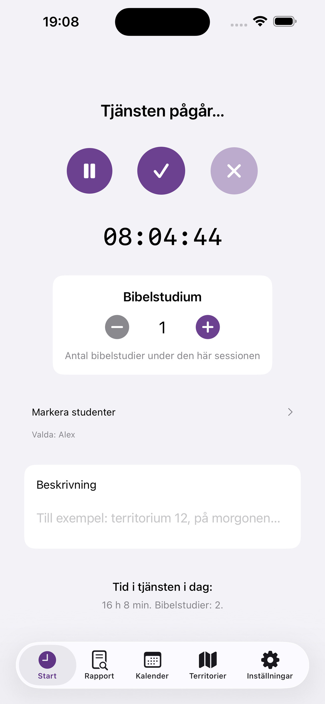
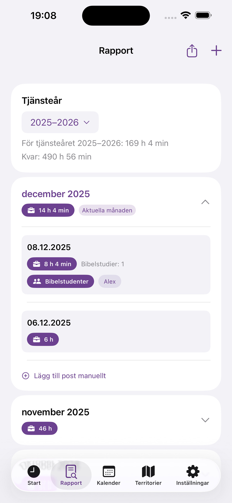
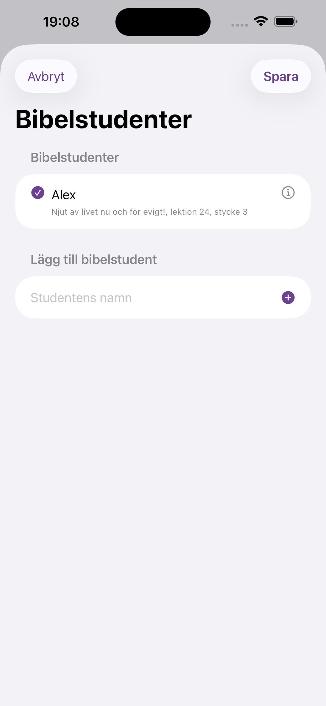
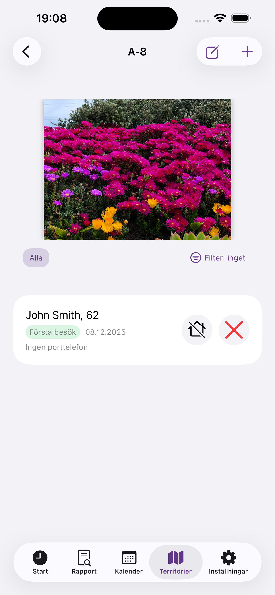
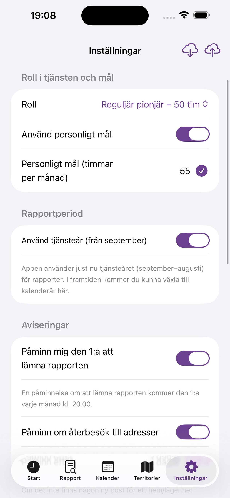
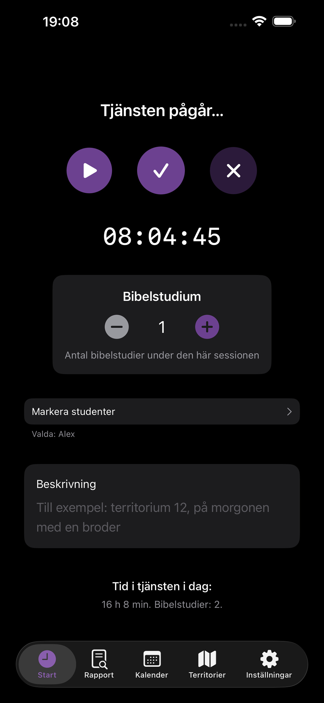
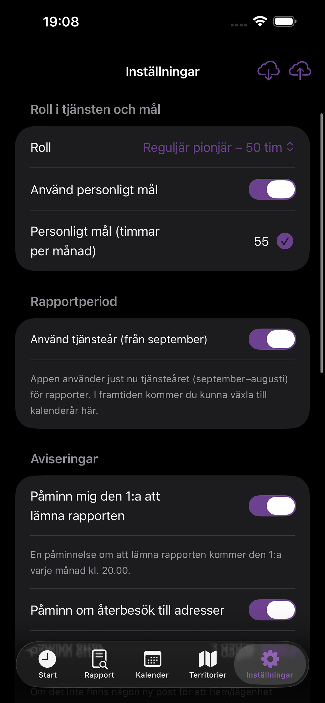

Ditt kompletta verktyg för tjänsten och pionjärtjänsten
JW Ministry är en app för tjänsten på fältet för Jehovas vittnen på iPhone och iPad: timer med Live Activities, översikt över bibelkurser, rapporter för tjänsteåret, timmål för pionjärer och distriktskort.



Utforska varje vy i JW Ministry
Äkta skärmbilder på svenska — från tjänstetimer och bibelkurser till pionjärkalender, distriktskort och mörkt OLED-läge.







Allt du behöver för en välorganiserad tjänst
Utvecklad för förkunnare, hjälppionjärer, reguljära pionjärer och specialpionjärer.
Smart Timer, Widgetar & Dynamic Island
Starta timern från appen, hemskärmswidgeten eller låsskärmen. Din aktiva tid syns hela tiden i Dynamic Island.
Bibelkurser & Lektionsframsteg
Koppla bibelkurser direkt till dina rapportposter. Håll koll på varje elevs lektion i ”Ett hopp om en ljus framtid”.
Tjänsteroller & Personliga Timmål
Stöder Förkunnare, Hjälppionjär (15 eller 30 timmar), Reguljär pionjär (50 timmar), Specialpionjär (90 / 100 timmar) samt eget månadsmål.
Tjänsteår (sept.–aug.) & Kalender
Planera möten för tjänst och den andliga familjekvällen. Jämför planerade och faktiska timmar och svep en plan direkt till rapporten.
Distrikt, Hyreshus & Återbesökspåminnelser
Skapa distriktskort med foton, 10 färger och lägenhetsgenerator efter portar och våningar. Sök på adress eller namn.
100 % Lokal Integritet & iCloud-backup
Ingen registrering och inga externa servrar. All data och alla foton stannar lokalt på din iPhone/iPad.
Nyheter i version 1.8
- Automatisk summering av planerade timmar i Kalendern med dubbel förloppsindikator (Planerat vs. Faktiskt).
- Omvandla ett planerat tjänstepass i Kalendern direkt till en rapportpost med ett svep.
- Direktsökning på adress eller namn i alla distrikt samt 10 färgteman för distriktskort.
- Stöd för kommande tjänsteår (2026–2027) under fliken Rapport.
- Full optimering för senaste iOS & iPadOS och förstärkt skydd för säkerhetskopior.
Varför förkunnare och pionjärer väljer JW Ministry
Jämförelse för tjänsterapport, pionjärschema och distriktshantering.
| Funktion | Pappersanteckningar | Äldre appar | JW Ministry 1.8 |
|---|---|---|---|
| Live-timer på låsskärmen & Dynamic Island | Nej | Nej | Ja (Live Activities) |
| Pionjärtimmar (15, 30, 50 tim) & tjänsteår (600 tim) beräkning | Manuellt | Delvis | Automatiskt + Eget mål |
| Planerat vs. Faktiskt i Kalendern & svep till Rapport | Nej | Nej | Med ett svep |
| Trapphus-/lägenhetsgenerator + Distriktsfoton & 10 färger | Papperslappar | Endast text | Visuella kort + Sökning |
| Påminnelser om återbesök & rapport den 1:a i månaden | Nej | Enkel | Smarta iOS-notiser |
| 100 % lokal integritet & full iCloud Drive-backup med foton | Lätt att tappa bort | Fel vid byte av iPhone | 100 % Offline & säkert |
| Stöd för senaste iOS, iPad, mörkt OLED-läge & 35+ språk | — | Uppdateras ej | Modern SwiftUI-design |
Utformad för Jehovas vittnens tjänst på fältet och pionjärtjänst
Hur JW Ministry hjälper förkunnare och pionjärer under hela tjänsteåret.
Reguljära pionjärer och specialpionjärer (50, 90 & 100 tim / Tjänsteår 600 tim)
Håll enkelt koll på månadsmålet på 50 timmar och årsmålet på 600 timmar från september till augusti. Sätt ett personligt mål (t.ex. 55 tim) och jämför planerad tid med faktisk tid i Kalendern.
- Automatisk balans för 50 tim/månad och 600 tim under tjänsteåret
- Personligt månatligt timmål (t.ex. 55 timmar)
- Dubbel stapel: planerade vs. rapporterade timmar
Hjälppionjärer (15 & 30 timmar) och församlingsförkunnare
Under kampanjmånader eller kring Åminnelsen byter du till Hjälppionjär (15 eller 30 tim) med ett tryck. Påminnelsen den 1:a kl. 20:00 hjälper dig att lämna in rapporten i tid.
- Snabbt byte till 15 eller 30 timmars hjälppionjärmål
- Dela månadsrapporten med ett tryck
- Automatisk påminnelse den 1:a varje månad kl. 20:00
Från-hus-till-hus distrikt, trapphus & återbesök
Skapa digitala distriktskort med kartfoto, 10 färger och lägenhetsgenerator. Anteckna ”Inte hemma” och sök snabbt på namn eller gata.
- Lägenhetsgenerator efter port och våning
- Distriktsfoton, 10 färger och snabb sökning på namn eller adress
- Automatiska påminnelser för återbesök
Bibelkursöversikt & modernt alternativ till ServicePlanner / MyTime
Spara varje elevs aktuella lektion i ”Ett hopp om en ljus framtid”. Byggd specifikt för iPhone och iPad.
- Följ lektioner i ”Ett hopp om en ljus framtid”
- Widgetar, Dynamic Island och mörkt OLED-läge
- Modern ersättare för ServicePlanner och MyTime
Omdömen från förkunnare och pionjärer
Vad bröder och systrar säger som använder JW Ministry varje vecka.
“Att se summan av planerade timmar i Kalendern bredvid mina faktiska timmar gör det så mycket enklare att hålla mitt schema på 50 timmar.”
“Timern på låsskärmen och att kunna svepa en plan från Kalendern direkt till rapporten fungerar klockrent.”
“Trapphusgeneratorn och namnsökningen i distriktskorten har ersatt alla mina lösa papperslappar.”
Översatt till mer än 35 språk
Appens gränssnitt, widgetar och notiser anpassas automatiskt efter språket på din iPhone eller iPad:
Stöd utvecklingen av JW Ministry
JW Ministry är helt gratis och utan prenumerationer. Om appen underlättar din tjänst kan du stödja framtida iOS-uppdateringar och den årliga Apple Developer-licensen:
Direkt kryptoöverföring (0 % avgift)
Direkt till utvecklarens plånbok:
TQQxYhThQGngj887Lvq9TnKtyyYMcUDFNw
UQBNBroTUyMG0YqgiHGXwVKO_rKe5d2y7gXqvICREjBwuKYk
Vanliga frågor (FAQ)
Hur kompletterar JW Ministry appen JW Library?
Medan JW Library används för att läsa Bibeln, publikationer och vid möten, är JW Ministry skapad för din personliga tjänst på fältet: tidtagning, pionjärschema (15, 30, 50 tim), distriktsanteckningar och bibelkurser.
Var sparas mina rapporter och distriktsanteckningar?
Uteslutande lokalt på din egen iPhone eller iPad. Ingen data skickas till externa servrar.
Hur flyttar jag mina data till en ny iPhone?
Under Inställningar trycker du på molnikonen uppe till höger för att exportera en fullständig backup till iCloud Drive och återställer den på din nya enhet.
Fungerar appen utan internet i tjänsten?
Ja, appen fungerar 100 % offline utan mobildata eller Wi-Fi.